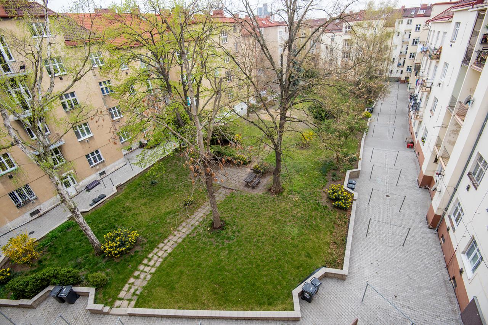
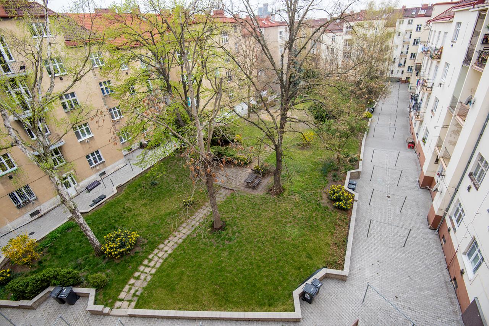

Pronajmu byt v Praze Vysočanech
Informace o bytu:
Pronajmu byt o celkové výměře 52,72 m2, umístěný ve 3. patře cihlového domu bez výtahu v pražských Vysočanech. Součástí této výměry jsou balkon (1,59 m2) a sklep (2 m2).
Uvítáte, že byt již prošel důležitými úpravami, např. koupelna byla kompletně rekonstruována v loňském roce.
Byt pronajmu vybavený.
Přímo v bytě máte komoru a menší zasklený balkon, v suterénu domu můžete využívat sklep a ve vnitrobloku krásný parčík, který rovněž patří družstvu.
Lokalita:
Dům je umístěn v bezprostřední blízkosti stanice metra linky B - Vysočanská. Zde navíc oceníte řadu dalších autobusových a tramvajových spojů včetně nedalekých vlakových nádraží Vysočany a Libeň. V centru města na Václavském náměstí jste metrem za 11 minut.
Poloha domu vyhovuje i řidičům, kteří odtud mají blízko zejména na dálnice D8, D10 a D11.
Také občanské vybavenosti není co vytknout, kousíček od domu je Vám k dispozici nákupní centrum Fénix, o něco dále pak Galerie Harfa nebo třeba poliklinika Vysočany, vzdálená dvě zastávky tramvají.
Podrobnosti:
- Dispozice: 2+kk
- Obytná plocha: 53 m2
- Patro: 3. patro
- Počet nadzemních podlaží: 5
- Lokalita: Praha Vysočany, Kolbenova
- Topení: Lokální plynové
Cena a platby:
Cena: 16.000 Kč/měsíc
Energie cca 3000 Kč/měsíc
Záloha/deposit za byt: 24.000 Kč


 
